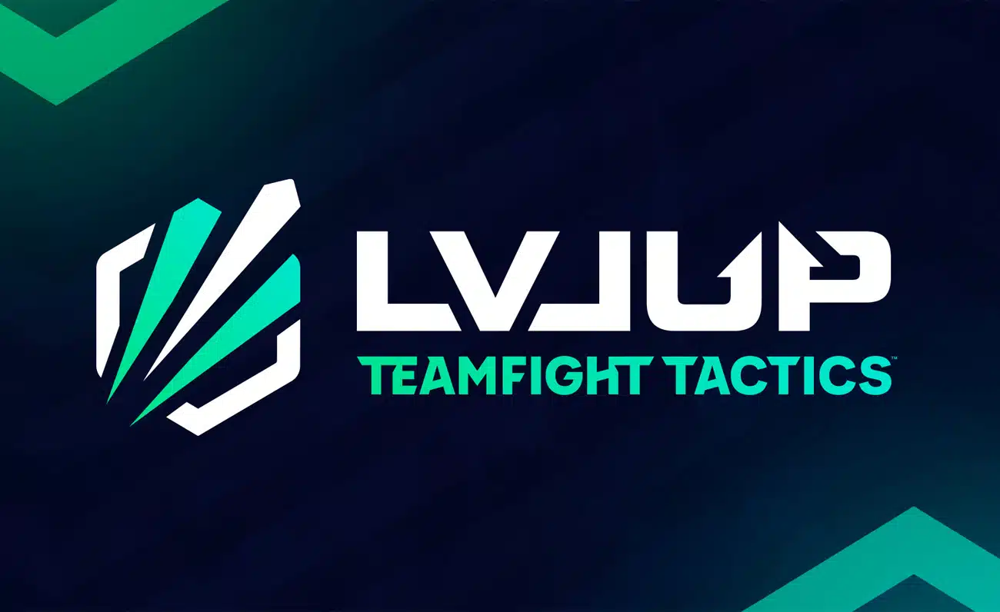

Bienvenidos a Paitft
¡Hola, estrategas de Paiporta! Somos la Asociación de Jugadores de TFT de Paiporta (APTP), una comunidad dedicada a los entusiastas de Teamfight Tactics (TFT) en nuestra localidad. Nuestro objetivo es reunir a jugadores apasionados para compartir estrategias, participar en torneos locales y disfrutar del juego en un ambiente amistoso y competitivo.


¿Qué es Teamfight Tactics?
Teamfight Tactics es un juego de auto-battler desarrollado por Riot Games, en el que los jugadores compiten en una serie de rondas automáticas usando una combinación de unidades, objetos y estrategias para superar a sus oponentes. Cada partida es una prueba de táctica y adaptabilidad, ¡y nos encanta!
Nuestra Misión
- Fomentar la Comunidad: Conectasample3.jpgr a jugadores locales que comparten la pasión por TFT.
- Organizar Eventos: Desde torneos amistosos hasta sesiones de entrenamiento y visualización en grupo.
- Mejorar Habilidades: Ofrecer talleres, estrategias y análisis para ayudar a nuestros miembros a mejorar en el juego.
- Crear un Espacio Inclusivo: Asegurarnos de que todos los jugadores, sin importar su nivel, se sientan bienvenidos.
¿Cómo Unirse?
¡Es fácil ser parte de nuestra comunidad! Solo sigue estos pasos:
Únete a Nuestro DiscordNuestros Eventos
- Torneo Mensual: Competencias regulares para poner a prueba tus habilidades y ganar premios.
- Sesiones de Entrenamiento: Workshops y sesiones de juego para mejorar tus tácticas y estrategias.
- Reuniones Sociales: Encuentros casuales para conocer a otros jugadores y disfrutar del juego juntos.
